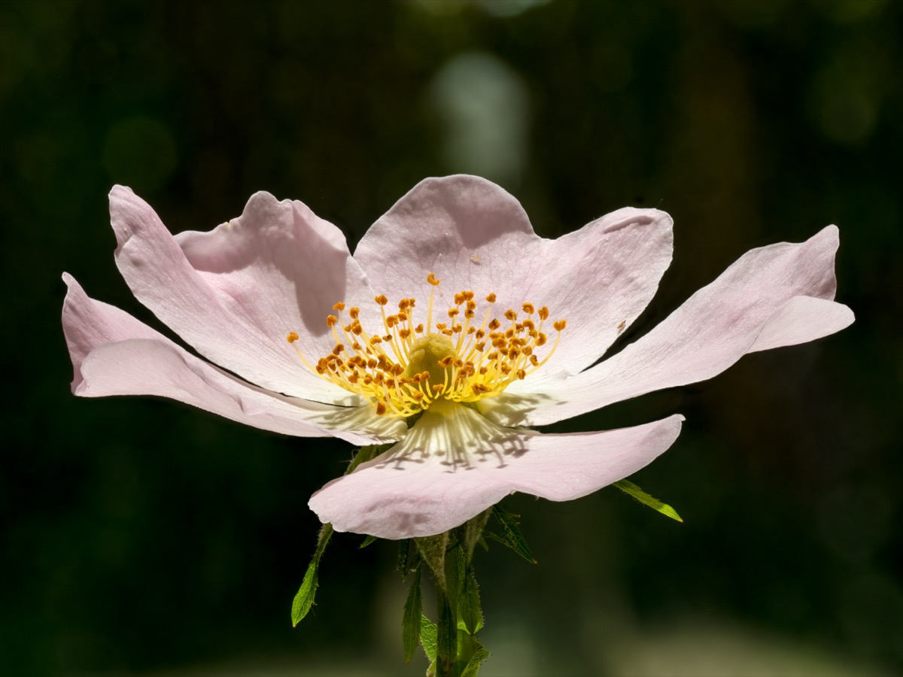
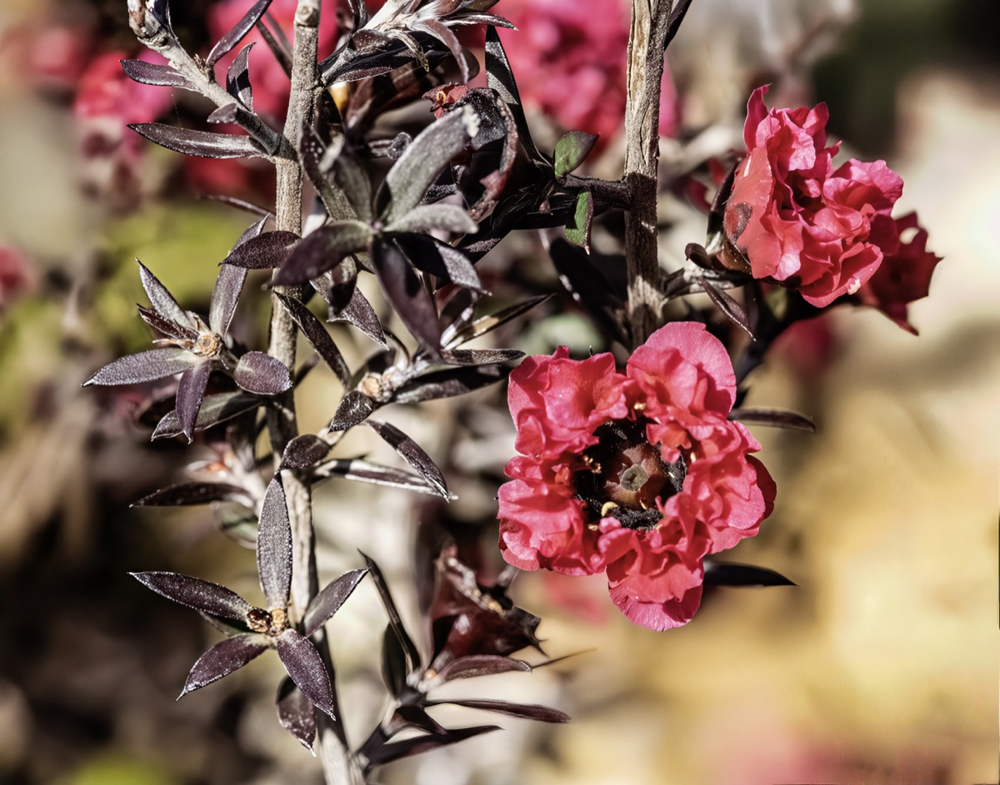
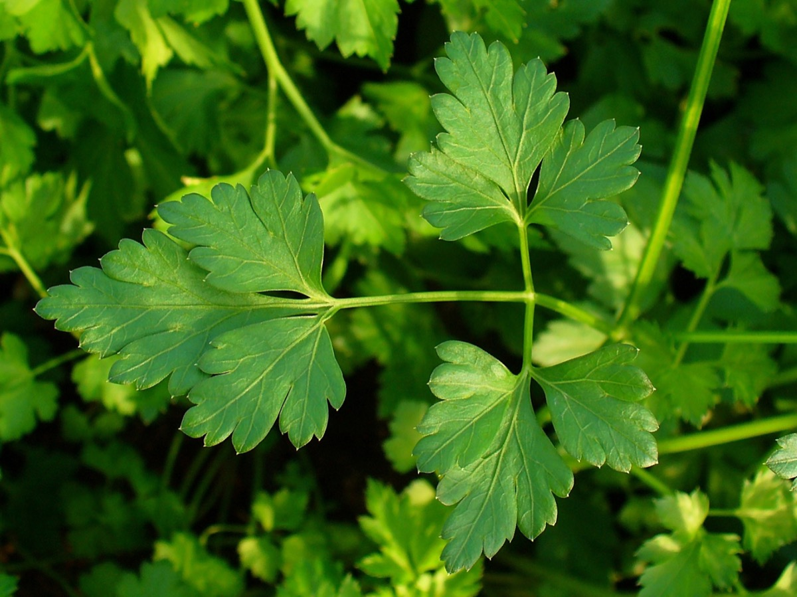
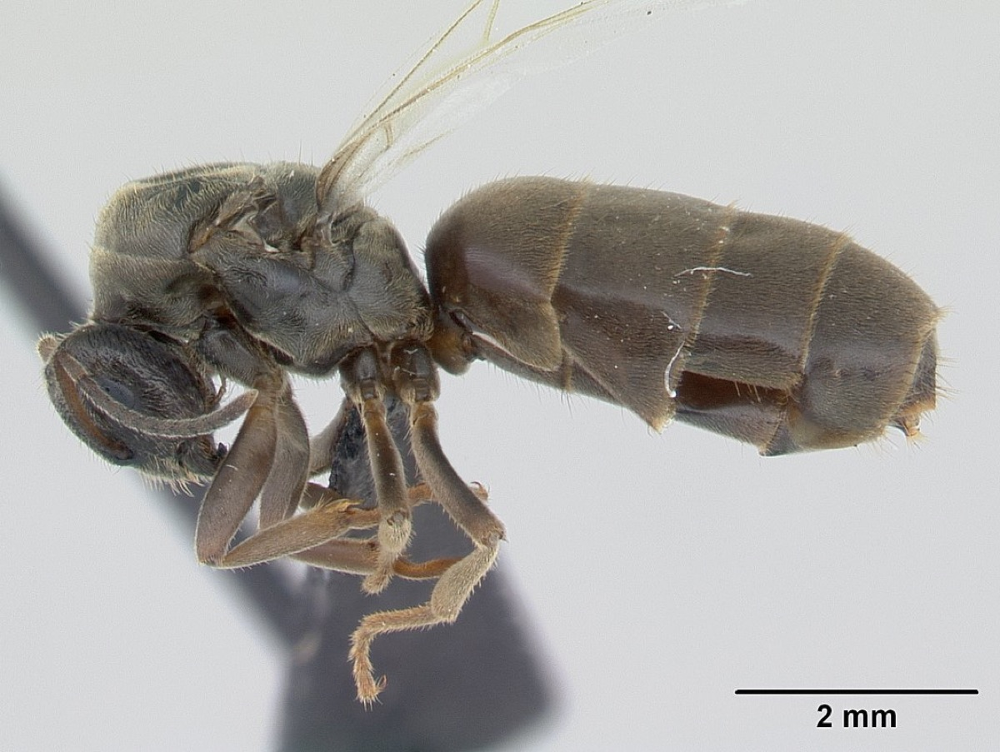
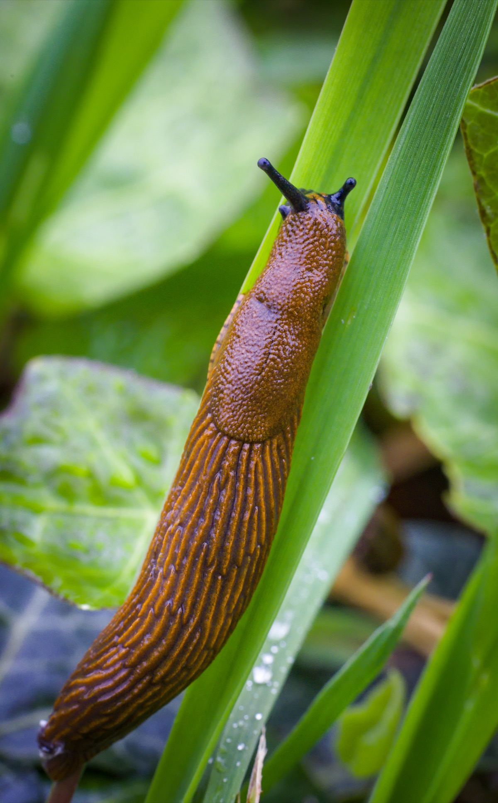

Cuaderno de Campo
CODEX NATURAE
Catálogo personal de especies
15
Especies
5
Hábitats
7
Familias
5
Órdenes
☙ Últimas Incorporaciones ☙
Coccinella septempunctata
Mariquita
Coccinellidae
Graphosoma italicum
Chinche rayada
Pentatomidae
Clonopsis gallica
Insecto palo
Bacillidae
Apis mellifera
Abeja común
Apidae
☙ Hábitats Explorados ☙
🌲
Bosque
Caducifolio y mixto
🏞
Pradera
Prados de montaña
💧
Humedal
Ríos y lagunas
🌊
Costa
Litoral atlántico
🌿
Jardín
Costero atlántico
☙ Catálogo de Especies ☙
🌱
Plantas
6 especies

Rosa canina
Escaramujo
Rosaceae

Leptospermum scoparium
Manuka
Myrtaceae
Cupressus sempervirens
Ciprés
Cupressaceae
Salvia rosmarinus
Romero
Lamiaceae

Petroselinum crispum
Perejil
Apiaceae
Citrus × limon
Limonero
Rutaceae
🐦
Aves
1 especie
Passer domesticus
Gorrión común
Passeridae
🦋
Insectos
5 especies
Apis mellifera
Abeja común
Apidae
Clonopsis gallica
Insecto palo
Bacillidae
Coccinella septempunctata
Mariquita
Coccinellidae
Graphosoma italicum
Chinche rayada
Pentatomidae

Lasius niger
Hormiga negra de jardín
Formicidae
🐶
Mamíferos
0 especies
🐍
Reptiles
0 especies
🐟
Peces
0 especies
🦐
Moluscos
2 especies
Cornu aspersum
Caracol común
Helicidae

Arion vulgaris
Babosa común
Arionidae
🪨
Invertebrados Marinos
1 especie
Aplysia depilans
Liebre de mar
Aplysiidae
🦠
Bacterias
0 especies
🔬
Protozoos
0 especies
🧬
Microalgas
0 especies
🔍
Otros
0 especies
☙ Teoría ☙
🌱
Botánica
1 artículo
Partes de una planta
Morfología vegetal básica
🐶
Zoología
0 artículos
🌿
Ecología
0 artículos
🔬
Microbiología
0 artículos